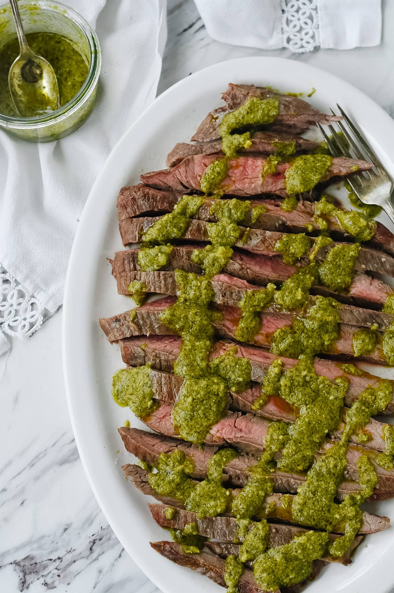

Pesto Steak

Description
Easy, four ingredient pesto flank steak recipe!
Ingredients
- 3/2 lb flank steak
- 1/2 cup pesto
- 2 Tbsp white vinegar
- 1 Tbsp water
Steps
- Mix together the pesto, vinegar and water.
- Sprinkle both sides of meat with coarse salt and allow steak to sit at room temperature for 30-40 minutes before grilling
- Grill to desired temperature. We like our meat medium which is 140-145 Degrees F. Depending on the thickness of your steak it will be about 5 minutes per side.
- A few minutes before it is done brush both sides with pesto.
- Remove from grill and allow to sit at room temperature for 5 minutes or so.
- Slice steak against the grain and drizzle with remaining pesto mixture.